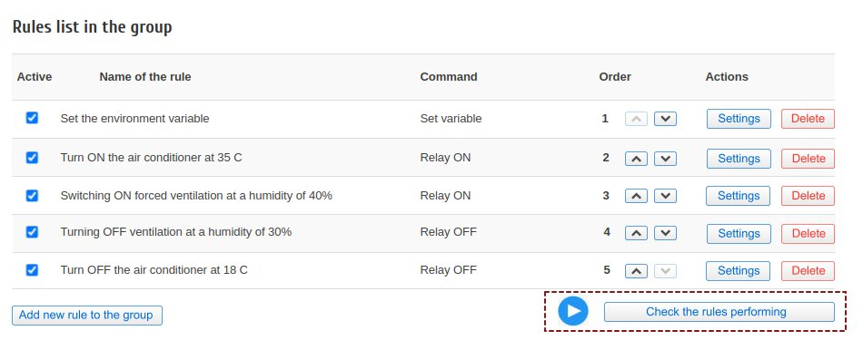
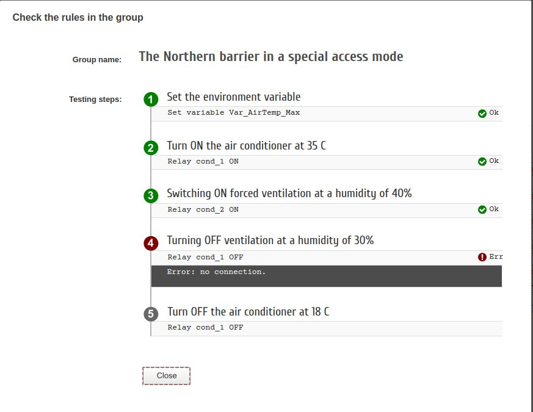

2020–2021 · Network monitoring equipment maker
Firmware, UI concepts and the FAD architecture for network monitoring devices
The company develops devices for remote monitoring and power management of network equipment. I worked remotely in its Linux firmware department. The client had voiced the idea of describing device behaviour as rules; on my own initiative, without a specification, I proposed how to implement it — the FAD architecture and a series of interactive UI prototypes for the next generation of the OpenWrt-based firmware.
What I did
- LTE gateway device (OpenWrt, SIMCom SIM7600): implemented SMS notifications.
- Set up Zabbix to monitor the company's devices.
- Designed the front-end/back-end split for LuCI pages that control relays and digital inputs. Agreed with the back-end developer on a ubus event interface, so live device state stays in RAM and flash is written only on explicit user saves — protecting its limited write endurance.
- Estimated new UI modules (digital inputs; notification rules with silent-mode schedules and delivery conditions) task by task, separately for front-end and back-end.
- Wrote internal engineering articles on software architecture and domain modelling.
FAD: every module from one universal block
FAD stands for Functionality – Adapter – Driver. Drivers talk to hardware and protocols (SNMP, HTTP, GPIO), adapters normalise their data, functionalities implement what the user cares about, and UI widgets display it. All layers are built from the same block. I presented it to the client as my own interactive prototype; there was no specification behind it.
Resource templates: everything is a resource
FAD stands for Functionality – Adapter – Driver. Drivers talk to hardware and protocols (SNMP, HTTP, GPIO), adapters normalise their data, functionalities implement what the user cares about, and UI widgets display it. All layers are built from the same block.

Logic rules: behaviour as ordered, testable steps
A rule group is a device scenario — say, climate control of a server room — made of ordered rules. Each rule runs a command (set a variable, switch a relay, send a notification) under conditions built from variables tied to sensors and events. The prototype also had a step-by-step test run and an event log of every variable change.

